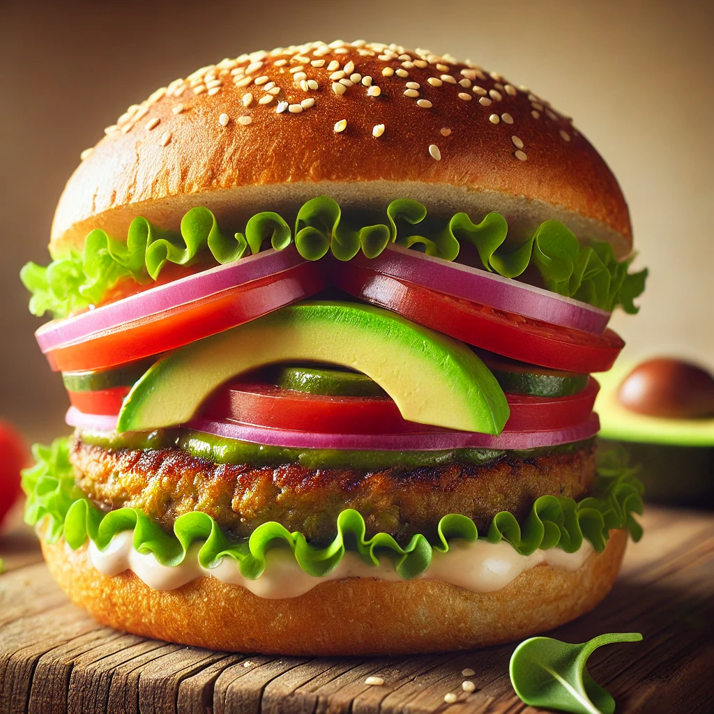

Vegetarian Burger

Description
This vegetarian burger is hearty, flavorful, and packed with plant-based protein and fiber. Made from a combination of black beans, oats, and savory spices, these patties hold together well and deliver a satisfying texture. You’ll also enjoy a balance of smoky, earthy flavors with hints of garlic and a touch of cumin, while shredded carrots and diced bell peppers add a slight sweetness and extra nutrients. Serve the burgers on toasted buns with your favorite toppings like avocado, lettuce, tomato, and a dollop of chipotle mayo for a flavorful meal that even non-vegetarians will love.
Ingredients
- 1 can (15 oz) black beans, drained and rinsed
- 1/2 cup rolled oats
- 1/2 cup breadcrumbs
- 1/4 cup shredded carrots
- 1/4 cup diced bell pepper (any color)
- 1/4 cup diced red onion
- 1 clove garlic, minced
- 1 tbsp soy sauce
- 1 tsp smoked paprika
- 1 tsp ground cumin
- 1/2 tsp salt
- 1/4 tsp black pepper
- 1 tbsp olive oil (for cooking)
- 4 burger buns
- Toppings: lettuce, tomato slices, avocado, chipotle mayo (optional)
Steps
- Prep the Ingredients: Start by mashing the black beans in a large bowl with a fork or potato masher until mostly smooth, leaving a few chunks for texture.
- Combine Ingredients: Add the rolled oats, breadcrumbs, shredded carrots, diced bell pepper, diced onion, minced garlic, soy sauce, smoked paprika, cumin, salt, and black pepper to the mashed beans. Mix everything until fully combined.
- Form the Patties: Use your hands to shape the mixture into four equal-sized patties, pressing them together firmly so they hold their shape.
- Cook the Patties: Heat a large skillet over medium heat and add the olive oil. Once the oil is hot, place the patties in the skillet and cook for about 4–5 minutes on each side, until they’re golden brown and slightly crispy.
- Assemble the Burgers: Toast the burger buns if desired. Place each patty on a bun and add your favorite toppings, like lettuce, tomato, avocado, and a dollop of chipotle mayo.
- Serve and Enjoy: Serve the burgers warm and enjoy!